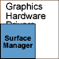

Graphics Hardware
Drivers Collection
The Graphics Hardware Drivers collection provides optional hardware
adaptation services.
Figure 1. The Graphics Hardware Drivers collection

- Display Driver Component
The Display Driver component (also known as the Display Channel Driver) is new in Symbian^3 and is for use in ScreenPlay only. The Display Driver component includes a reference implementation, which a composition implementation can use to display the composited output on the screen without tearing. However, the use of the Display Channel Driver is optional. Implementers of the Composition Interface are not required to use it.
- Surface Manager Component
The Surface Manager component manages the lifetime and use of graphics composition surfaces in system memory.
Copyright ©2010 Nokia Corporation and/or its subsidiary(-ies).
All rights
reserved. Unless otherwise stated, these materials are provided under the terms of the Eclipse Public License
v1.0.